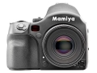

645AFD III 拥有2800万像素，感光度范围ISO25-6400，机身背面采用3.5英寸超大显示屏，是一款高品质的触摸式液晶屏幕。这款相机还实现了很低的图像噪声。
操控上和135机型很接近的645AF机型
1、机身做工很好，外型现代感比较强 2、体积在中画幅单反里算比较小的 3、新的数码优化标头画质提升明显 4、新款胶片后背过片迅速，基本能满足人文拍摄需要
1、快门声一般 2、AF虽然宣传说提升很多，但实际使用中还是感觉有些犹豫 3、对焦点还是有点少，如果能增加上下两点选择就好了 4、中画幅对手持拍摄的稳定性要求很高 5、玛米亚镜头缺少一点油腻味